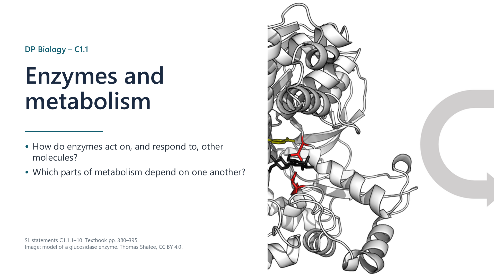
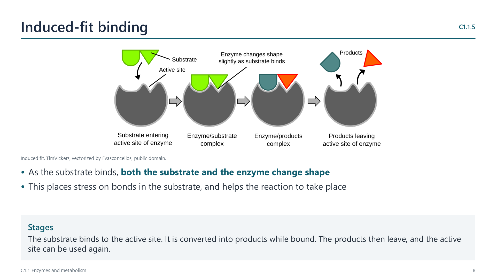
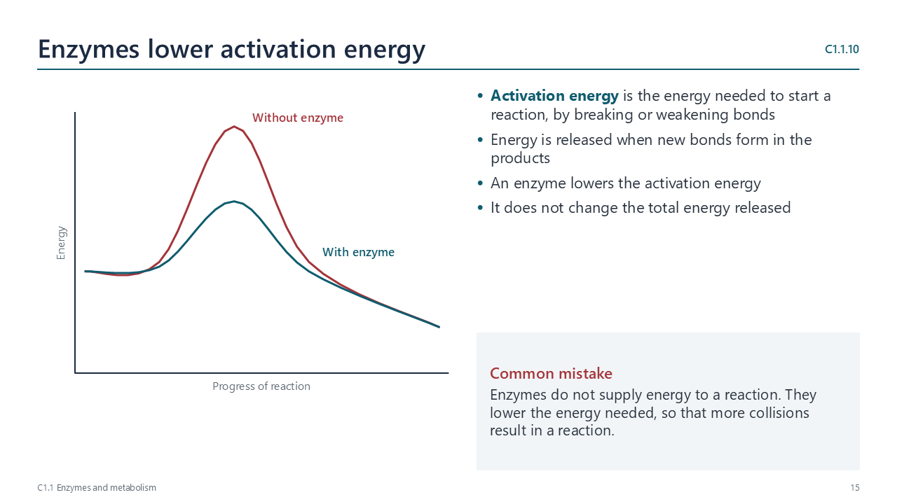
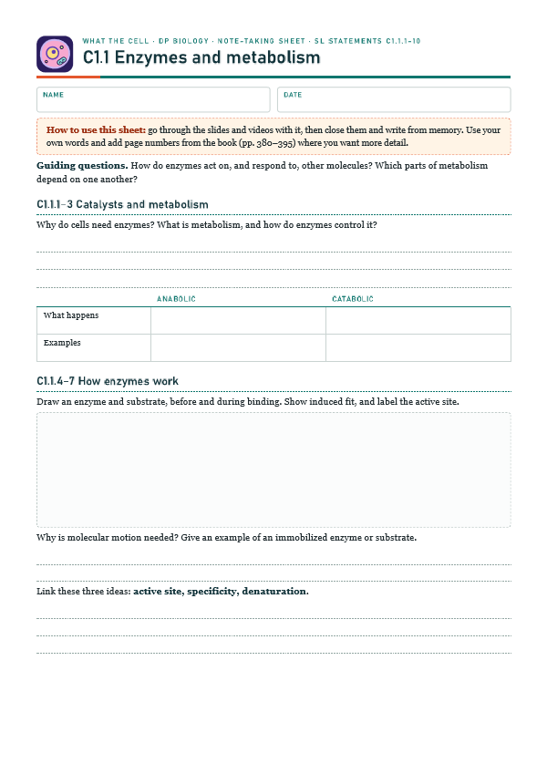
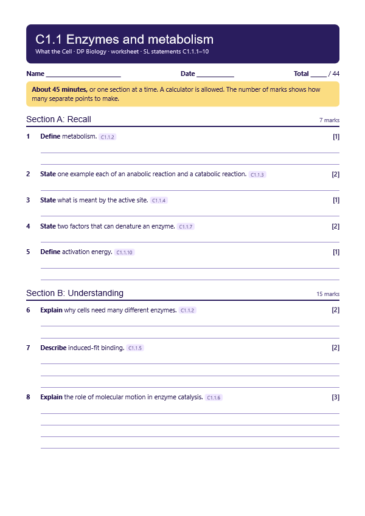
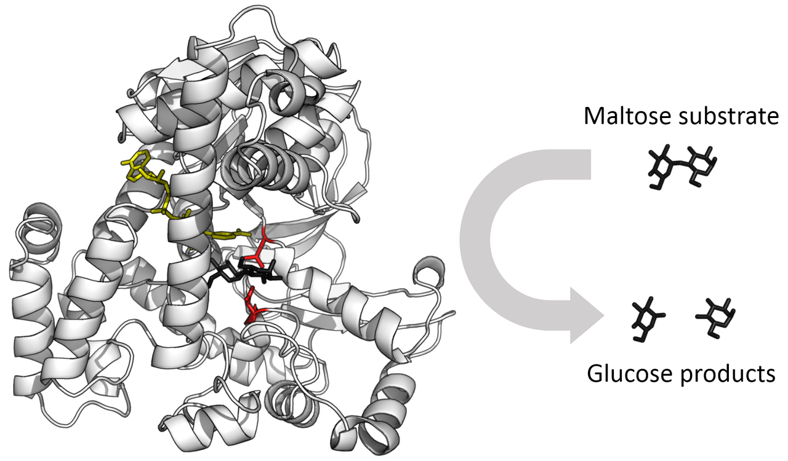
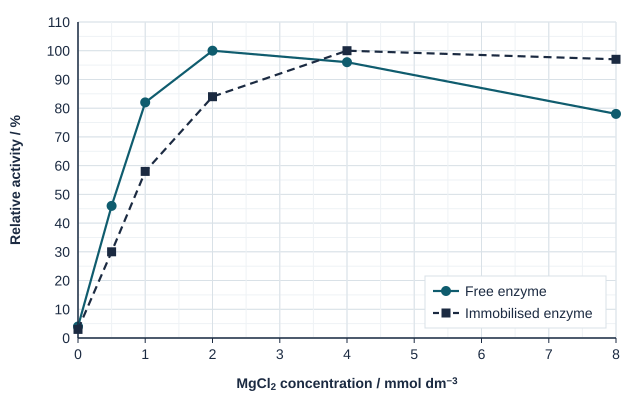

Enzymes as catalysts
pp. 380–395A catalyst speeds up a reaction without being used up. Without enzymes, many reactions would be too slow to sustain life. Heat would speed them up, but it would also damage proteins.

Written for this site from the class slides. The chapter is on pages 380–395 of the course textbook. Image credits are on slide 18.
A catalyst speeds up a reaction without being used up. Without enzymes, many reactions would be too slow to sustain life. Heat would speed them up, but it would also damage proteins.
Metabolism is the complex network of interdependent reactions in an organism. Enzymes are specific, so organisms need many different ones. A cell can control metabolism through its enzymes.
| Anabolic: builds | Catabolic: breaks down |
|---|---|
| Protein synthesis, by condensation | Digestion, by hydrolysis |
| Glycogen formation | Oxidation of substrates in respiration |
| Photosynthesis | Decomposition |
The active site contains only a few amino acids. Interactions between amino acids throughout the protein hold it in shape, and give it the properties needed for catalysis.

Both the substrate and the enzyme change shape as binding occurs. This places stress on bonds in the substrate.
Movement is needed for a substrate and active site to meet. In solution, random motion causes collisions. Large substrates can be immobilized, and enzymes can be fixed in membranes. In these cases, only the other molecule moves.
The active site has a shape and chemical properties that are complementary to the substrate, and this gives specificity. In denaturation, heat or extreme pH changes the active site, so the substrate can no longer bind.
| Factor | Below the optimum, or low | Above the optimum, or high |
|---|---|---|
| Temperature | Rate rises, with more collisions | Rate falls sharply, due to denaturation |
| pH | Rate falls on either side of the optimum, as bonds holding the active site are disrupted | |
| Substrate | Rate rises, with more collisions | Rate levels off, as active sites are saturated |
Rate is the change in substrate or product per unit of time. A curve is steepest at the start, so use the initial rate. For example, 6 cm³ of oxygen in 20 seconds is 0.3 cm³ per second.
Energy is needed to break bonds in the substrate, and energy is released as bonds form in the products. An enzyme lowers the activation energy, without changing the total energy released.

Select a video to play it here. Select it again to close it.
Print this guide and complete it as you work through the slides and videos. It asks for your own explanations, so close the notes while you try each section.

The self-check needs JavaScript to run.
A printable worksheet covering all ten statements, from quick recall to data questions and a longer answer. It has 44 marks and takes about 45 minutes, or you can do one section at a time.
Your teacher has the mark scheme.

Questions built on realistic experimental data, in the style of Paper 1B and Paper 2. Work them on paper and show your working. 8 marks in total. Your teacher has the mark scheme.

Hexokinase from yeast was tested free in solution and immobilised in alginate beads. ATP was kept at 1.0 mmol dm−3, and the concentration of magnesium chloride (MgCl2) was varied. Activity is given as a percentage of the highest activity measured for that form of the enzyme.

You will need: Potato or yeast suspension, 3% hydrogen peroxide, water baths, measuring cylinder, boiling tubes
Safety: Eye protection. Hydrogen peroxide irritates, so wash off any skin contact.
Carry this out with your teacher's supervision and follow your school's lab rules.
Fischer's lock-and-key model of 1894 was refined by Koshland's induced-fit model in 1958, as evidence showed that enzymes change shape.
Lock and key is still taught first. Consider when usefulness and accuracy pull in different directions.
Summarised in our own words. Use each code to find the exact wording in your textbook or the IB subject guide.
© 2026 Akash Parthi Bendran. Please ask before using or sharing any resources from this site: see permission to use.